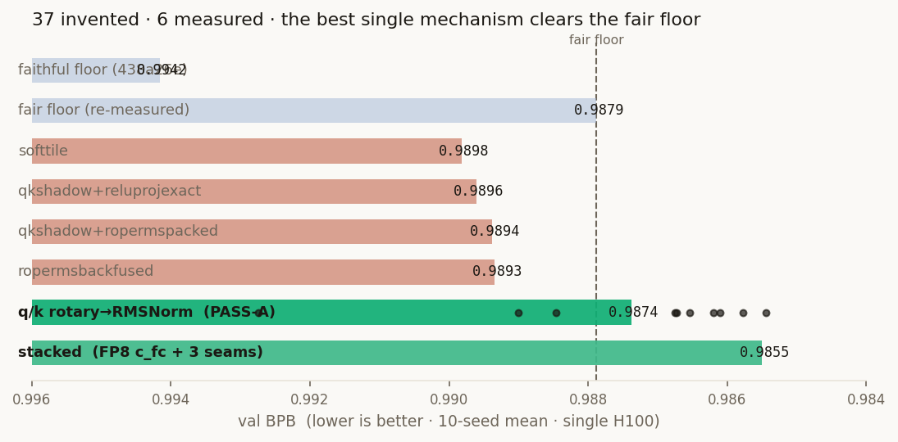

In this article
A glimpse of the future
Give Argus an objective and compute, and it starts the research loop itself: read, hypothesize, build, measure, critique, repeat. No prompt-by-prompt operator, no human handoff between analysis and execution, no waiting for tomorrow morning.
And it is already shipping
Global #6 overall on NVIDIA, with two #1 kernels; ~77% on AARRI-Bench versus the paper's reported 68.3%; Arbor 28.0 versus its own agent's 20.83; plus a 79.77-second speedrun, 37 original mechanisms, and 33 research PDFs.
The proof, at a glance
| Arena | What Argus did | Why it matters |
|---|---|---|
| NVIDIA SOL-ExecBench B200 · externally measured | Reached global #6 overall; submitted 101 kernels, with 2 at #1 (0.851 / 0.708) and 7 reaching the public top three | Every score comes from NVIDIA running the code on real B200 hardware |
| AARRI-Bench research-intern skill | Scored 76.8% on the frozen verifier / 78.0% with an independent LLM judge, above the paper's reported best of 68.3% | Tests the full texture of research work: understanding, interaction, context, and hands-on execution |
| Arbor math-reasoning data | Pushed the gap to 28.0, above Arbor's own agent (20.83), Claude Code (8.33), and Codex (6.25) | Argus improved not one answer but an experimental loop that keeps producing harder training data |
| nanoGPT speedrun 8×H100 · N=10 | Reached val_loss≤3.28 in 79.77 seconds, the fastest reproducible valid result on the same device and frozen harness | Started from the public #83 recipe and pushed an already optimized training system further |
| nanochat 5-minute challenge | Three days, 60 missions, 37 original mechanisms; best stacked result 0.9855 val BPB | The system crossed the line from searching known knobs to writing new training machinery |
| Research collection | Across six research directions, 33 PDFs: 27 manuscripts with no TBD markers and 6 clearly labeled drafts | The autonomous pipeline moved from a one-off delivery to a body of work |
| Persistent autonomy | Planner, Engineer, and Reviewer hand work across missions; the system remembers, critiques, and changes course | This is not a choreographed one-shot demo; it is a research machine that compounds experience |
How to read the numbers. “Global #6” is the overall placement reached by this campaign; the live board continues to move. nanochat uses one H100 and 10 seeds; the single-mechanism −0.0005 edge sits inside the 95% CI, while the stronger −0.0024 result stacks three mechanisms. Paper structure gates establish complete delivery, not peer-review acceptance.
How Argus reached global #6 on NVIDIA B200
GPU performance is one of the least forgiving arenas in computing: an idea becomes a number only after the code is correct, compiles, and actually pushes the hardware faster. NVIDIA's SOL-ExecBench scores how closely a kernel approaches the B200's peak throughput. Argus submitted 101 kernels and pushed its overall standing to global #6. 040_conv2d_residual_block (0.851) and 002_fp8_attention_qkv_projection (0.708) reached #1 on the full public board — ahead of SF Tensor (0.846) and Recursive (0.647), respectively. On fp8-attention, Argus holds both #1 and #3.
And this is not one polished screenshot. NVIDIA measured all 101 submissions: across the campaign, 7 reached the public top three, 2 took #1, and the overall standing reached global #6. The two head-to-head wins over Recursive are fp8-attention (0.708 vs 0.647) and flux-rmsnorm (0.5801 vs 0.5796). The live board keeps moving — this is a race still in progress. See the full B200 report and every rank →
Beyond kernels: it beat research agents at research work
Kernels prove that Argus can do hard engineering. AARRI-Bench (arXiv:2606.07462, from the RUC NLPIR group) asks the larger question: can it work like a real research intern — understand the task, operate the environment, hold context, and drive an experiment to completion? Across 82 tasks, Argus (our SkillLoop, GPT-5.5) scores 76.8% on the official verifier and 78.0% with an independent strict LLM judge. The two agree on 75/82 tasks and converge at ~77%, above the paper's strongest reported system, Mini-SWE-Agent + Claude Opus 4.7 (68.3%).
Scoring protocol. The 76.8% reflects review of a small number of string/format false negatives from the verifier; the independent LLM judge scores 78.0%. We ran the public tasks and official verifier in a bwrb sandbox rather than the benchmark's Harbor container. The protocol and verifier are public, so the run can be reproduced independently.
Then Argus made the benchmark itself harder
Arbor's (RUC NLPIR) Math-Reasoning Data task does not ask an agent to solve one math problem. It asks the agent to improve a pipeline that keeps creating hard problems. The more reliably those problems defeat a solver model, the wider the gap and the more useful the data. Starting from the paper's pipeline, Argus rewrote the generation loop and pushed the gap to 28.0 — above Arbor's own agent (20.83), Claude Code (8.33), and Codex (6.25). It improved not one output, but a machine that keeps producing harder data.
Experimental protocol. Competitor scores come from Arbor's public repository; Argus's 28.0 (23.96 on a companion evaluation) uses the same pipeline and grader. The only component rewritten was the generation loop, not the evaluator.
Inside Argus: a research lab that runs itself
The architectural principle is simple: put the intelligence in the agents and keep the objective outside them. The runtime never pretends to know research better than the researcher. It keeps the roles collaborating, remembers what happened, and makes every mission begin where the last one ended.
- A deliberately thin runtime. A stage machine carries state, manages budgets, and executes gates and rollback. It does not judge ideas for the agents; it gives the agents the conditions to judge them.
- Three roles in productive tension. A Planner chooses direction and defines the next move. An Engineer writes code, runs experiments, profiles, and edits kernels. A Reviewer attacks weak points, demands bolder attempts, and alone decides when the work is complete.
- One system, many frontiers. Swap the
verticaland the same roles enterresearch,nanochat,speedrun,kernelbench, and beyond, each with its own objective and tools.
This is not a thin prompt wrapper. It is a persistent research runtime: ~100k lines of Python, 137 tests, and CI on every change.
It can even improve itself — without moving the finish line
Argus watches its own runs, finds recurring friction, and proposes improvements to its scaffolding. One layer remains sealed: the outcome kernel — metric, validity test, independent wall clock, scorer, and validation data. The meta-loop may change how research happens; it cannot change what success means.
That evolution loop has five steps:
- Seal the scoreboard — hash-pin the scorer and bound the run with an independent clock.
- Instrument the run — observe what actually happened through a read-only layer.
- Critique the scaffolding — a meta-critic finds systemic friction but applies nothing directly.
- Replay offline — test whether a proposed edit improves the process without spending GPU time.
- Apply asymmetrically — safe additive rules may ship, contract changes wait for human A/B, and verifier changes are refused.
The result is not a black box rewriting itself at will. It is a research machine that compounds: capability can grow, memory can deepen, and the finish line stays put.
The leap from tuner to inventor
A tuner walks a map someone else drew. A researcher creates new terrain. To separate the two, we put Argus in a clean-room challenge: start from a public baseline, learn any general method, but never read a published best solution to this exact task.
The challenge. Karpathy's autoresearch nanochat: minimize validation bits-per-byte inside a fixed five-minute, single-GPU budget, starting from the public 438a26e baseline (a lineage shared with modded-nanogpt). The vertical had one defining rule:
"You MUST NOT search for, open, or copy the ANSWER to THIS task — the modded-nanogpt leaderboard or any published 'best' / 'optimized' solution to this exact speedrun. General method = ALLOWED; this task's published solution = DISQUALIFYING."
A previously tuned port (quasar, 0.9644) was quarantined. Argus had to find its own way across.
For the next ~3 days and 60 missions, the system stayed in motion. It profiled the backbone, then proposed, implemented, and measured 37 mechanisms: fused linear cross-entropy kernels, FP8 precision paths, persistent-shadow gradient variants, and fused RoPE/RMSNorm seams. Every attempt left a postmortem; six advanced to full 10-seed measurement.

The breakthrough came from a new seam. The best single mechanism fused the separate apply_rotary_emb and query/key rms_norm into one Triton kernel: perform rotary in place, normalize from the running RMS, then reconstruct the post-rotation state in a custom backward instead of storing it.
y1 = x1 * cos + x2 * sin # rotary, in place y2 = x2 * cos - x1 * sin inv_rms = tl.rsqrt(tl.sum(y1*y1 + y2*y2, 1)/head_dim + eps) tl.store(out1, y1 * inv_rms[:, None], mask=mask) # fused: normalize, no extra HBM store tl.store(out2, y2 * inv_rms[:, None], mask=mask)
The single mechanism reached 0.98738 (10-seed mean, 95% CI ±0.0014), crossing the same-protocol re-measured baseline of 0.98788. The −0.0005 gap remains inside the confidence interval; stacking three seams produced the clearer 0.98550 result (−0.0024). The first isolates one new mechanism. The second shows how far the mechanisms can travel together.
What matters is not only the fourth decimal place, but the trajectory. An earlier structured-orthogonal initializer ended as PASS-B. This time the system moved from one cautious idea that failed, through 37 bolder structural proposals, to a new kernel that crossed the baseline. It was not born an inventor; continuous experimentation made it increasingly act like one. All nanochat comparisons stay on H100; B200 fits more compute into five minutes, so the two hardware regimes are never mixed.
From a blank topic to 33 research PDFs
A paper is usually a relay race: one person finds the direction, another builds the benchmark, another runs experiments, another analyzes, and someone eventually writes. Argus collapses that relay into one continuous autonomous pipeline. Its research vertical moves through research → plan → benchmark → run → analysis → draft → review → submission. The current collection spans six research directions and 33 PDFs: 27 manuscripts with no TBD markers and 6 clearly labeled drafts.
The leap is no longer “it can write one PDF.” The research pipeline is beginning to produce continuously. Seven structural gates check page count, citations, figures, overfull boxes, and build state. They establish delivery capability, not conference acceptance; novelty and validity still belong to real peer review. Explore all 33 artifacts →
Why this lab can run unattended
- The objective lives outside the system. Scorer, data, and time budget are sealed; agents may change strategy, not the definition of victory.
- The clean room is a mechanism, not a prompt. Known answers and recovered recipes are quarantined; crossing the boundary disqualifies the run.
- Silicon is part of the protocol. Results under a wall-clock budget are compared only on identical hardware.
- Failure becomes memory. A PASS-B is not bad news to delete; it is a path the next mission no longer has to repeat.
A long-horizon agent will eventually discover every cheap shortcut. Argus does not answer with better vigilance; it closes the cheapest paths before search begins:
- reading the published answer,
- transplanting a recovered recipe,
- netting across hardware,
- counting a self-made benchmark as ground truth.
This does not make Argus infallible. It makes every failure leave useful information, every win leave a testable artifact, and the next mission keep moving. Unattended research does not require perfection; it requires a spine that does not drift over a long run.
This is the first shift, not the final chapter
- Harder science. Next is NatureBench: 90 tasks distilled from Nature-family papers, asking the system to rediscover rather than repeat known results.
- New worlds. The same runtime is moving into quantitative-finance factor research, with out-of-sample backtesting as the immovable objective.
- Open the lab. Hardening for clean, independent third-party runs is underway.
Reproducibility. All nanochat numbers: single H100 NVL, 5-minute (298s) wall-clock budget, 10 seeds, validation BPB via the unmodified lib.py harness, no cherry-picking. The fair floor was re-measured under the identical shared-GPU protocol. Live status and the full benchmark report are at argusbot.cn.